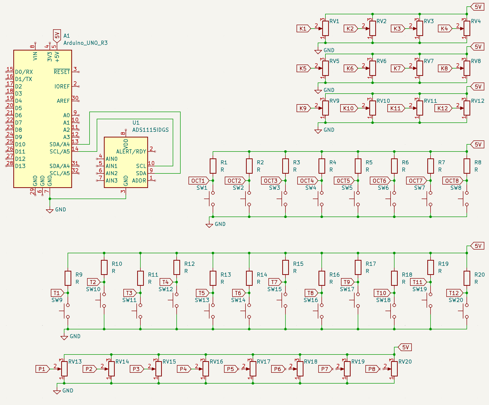

This is how we got into an innovation grants project without any prior expectations nor experience and figured our way through by creating a MIDI controller. I'm going to talk about all the insights, issues and how we resolved them. Also featuring some really crucial tips and an Ableton rack.
This is a blog where I go in detail about my experience and insights about the project and our solution. If you want to skip all the yapping, here's the TOC:
Context
May is coming to an end, I'm on a barbecue cookout, vibing with a couple of my friends, when the main barbecue guy - Davis - mentions that his sister is a representative from one of the collaborating parties in an upcoming innovation grants project called "MaKE IT". That immediately caught my attention.
Although Davis didn't seem too keen on the idea at first, I did. I've participated in another innovation grants project before and had good overall memories, although we didn't get as far as we had expected. But, since then, it's always been a dream of mine to participate and lead my own team to victory in such project. So we made a team of 3 people - me, Davis and Aļika - and started brainstorming.
The project was supposed to last 4 months, but y'know how it is with time management - just add an extra 2 on top, that would make for a more precise estimate. This both was a handicap and an opportunity for miracles to happen, so here's how it all went.
June
We gathered for our first meeting to discuss potential ideas only to realize we've jumped into this without thinking of anything beforehand and not a single idea seemed to work. Our first idea wasn't even close to a MIDI controller - it was a smart plug that allows the tracking of electricity consumption and turn off the plug whenever a person isn't close and/or the consumption is too high. Crazy what you can come up with when you don't know your range.
Nothing much else happened in June, besides the fact we might've come up with a genius marketing strategy I'm not willing to explain.
July
This is what we did repeatedly for 90% percent of July:


Then we decided to gather on-site one more time to discuss other potential ideas. During the meetup we realized that we all have interest in music, me and Davis both even have experience in music production - that's when everyone started to open up and the big ideas started rolling in.
August
This is when the path seemed clearer than ever. We had figured the base idea, done the research... but now what? The MIDI controller solution involves electronics and creating the schema, product 3D design, web design, marketing strategy and campaign. Our team doesn't even come close to completing all this, we just lacked the skills for that. Technically, I could've pooped out some simple solution for each of these points, but we're going for the big leagues, the chances of this working out would've been slim.
Right from the beginning of the MIDI controller idea, I had this Fox Stevenson unreleased song in my head, especially the arpeggiated melody that starts at 0:00 and fades to the background at 0:10 in that video.
For a while I've been trying to replicate the feel of that melody, but without any success. What I noticed, though - there's lots of notes in the arpeggio and lots of added effects that create this beautiful soundscape. I could only approximate the approach that was used there:
- A modified sawtooth synth;
- Some arpeggiator plugin. I believe a plugin was used to arpeggiate the notes of a chord instead of drawing the arp notes manually since that's quite a lot of manual work;
- Grain delay plugin;
- Reverb plugin.
This is the base of the sound which I believe is mostly correct. Reverse-engineering this wasn't that hard, but replicating the sound itself would be difficult, since the complicated chords. It would be perfect if there were known intervals between the notes in the chord, so that these chords could be generated instead of having to break your fingers trying to play big chords across the whole MIDI keyboard.
Thankfully, this is very achievable with the help of tonal harmonies. Tonal harmonies exist in every single song we hear every day - I dunno what else to explain. Essentially, tonal harmonies serve as a guide for which note goes well together with another note. By looking at the theory behind it, there are noticeable intervals between every note in any chord, with the condition that the chord sounds right. Welp, there's always jazz fuckers who will find the resolution chord even for the sound the piano makes when you sit on it and call it the C7(#9(5€)#11b13). I won't be looking into this. However, I want to find the sweet spot for generating these dreamy chords, while also not restraining the user to only those intervals - that would be a shame.
Ableton Rack
I made this Ableton rack by combining an existing chord generator rack I customized with my own extension of the rack with added effects. The goal of this was to simulate the result I wanted to achieve with the MIDI controller as close as I imagined it in my head. Just download it, throw it onto an Ableton MIDI track and play some notes while tweaking the knobs. It's still missing some key parameters the MIDI controller would have, but it works.
While making this rack, I really got to see the importance of this being a MIDI controller. It's just impossible to have an ergonomic control over everything on display.
And, as you can see in the video, only a single note is being played, but the rack generates full chords using tonal harmonies - that's the core beauty of this whole solution.
This still doesn't quite resolve the issue of being able to only play chords with certain intervals, though. What did I do? I decided that it's a problem for the next month and forgot about it. Instead we rolled out our list of features our MIDI controller would offer:
- 12 keys (1 octave) that generate all the possible chords;
- Knob for adding/removing notes from the chord - I really like this idea of changing the arpeggio size while playing the chords. Really neat way to control the dynamic of the sound;
- Knobs for controlling the base arpeggio parameters:
- Speed;
- Direction;
- Gate;
- 8 octave select buttons (basically selecting the highest or the lowest range the notes can go)
- Touch-sensitive keys - function as normal when pressed, but when gliding your finger up and down on the key, the notes in the arpeggio get thrown up an octave or down an octave, gradually;
- 12 buttons for selecting the key for the chords;
- 4 knobs for mapping the MIDI controller to DAW;
- Major/minor switch;
- Master volume knob.
Quite a lot, if you ask me. To finally understand how it would even look like, we made a sketch in Figma, which is a sketch that combined multiple different sketches and ideas provided by Aļika.
The Sketch
We were cutting corners here, as you can see - it's very basic, but contains most of what we want. Although the path seems clearer to me now, there are still so many questions... too many questions.
I decided to ignore them for now and pretend that everything is alright (I very well knew this was going to shit). Keep in mind, at this moment I had exactly 0 knowledge about electronics or how MIDI devices work whatsoever.
I tried learning everything by myself, but I realized it's different with hardware than it is with software - you need to have a microprocessor, buttons, switches, potentiometers, wires, etc. I needed to get some Arduino for prototyping, that's as far as my knowledge went. So I started attending a local STEM club as a last resort for help, where the immediate response I got was that it's impossible to do during the given timeframe.
Being the biggest baller I am, I still decided that I'm not gonna give all this up and continue working on the idea, even if it doesn't work out in the end. So I got myself an Arduino Uno, a couple potentiometers, breadboard, and some buttons I found on DigiKey (all sponsored by "MaKE IT" folks), and started digging my way around the world of Arduino.
Meanwhile, Davis unexpectedly popped up with the best 3D case design of the MIDI controller I would've never expected. No prior skills in Blender, 2 weeks, just outta nowhere.
The 3D model
Also August was coming to an end and one of the deliverables we undertook was to make a web design for our MIDI controller. So that was also a speedrun from my side.
The Web design
The design consists of a lot of placeholders and doesn't really explain much, but it looks pretty - that's as far as I'm concerned.
September
The intermediate result presentations got delayed... like a lot. We should've already done the presentations in July, but instead they were moved to September.
The "MaKE IT" project itself expects different solutions and ideas, but I know for a fact that an idea of a cup holder made of refurbished wood shavings would score better than a well-thought prototype of a new music instrument, just because it's marked as eco-frinedly.
The only way out would be if I tried to sell the whole MIDI controller idea as much as possible, basically telling that the person watching my presentation needs it. And... I think it worked. But I think the whole selling idea didn't play a huge role in this as it will in the final result presentation. The jury just wanted to see if we're not falling back on our progress.
After the presentation I continued coding the Arduino Uno prototype, just as I ran into a huuge issue - Arduino Uno doesn't support native MIDI signals. What that means is - I have the code that should send the MIDI signal, I have the libraries necessary for that, but the physical Arduino Uno device doesn't have the interface for translating the raw signal into something a computer can pick up as MIDI signal. This is what the STEM guy, Mārtiņš, had warned me about, too.
After an extensive research, I found out that some other Arduino folks had made very basic MIDI controllers using Arduino Uno. In their implementations, there was some common software they used on the computer - Hairless MIDI and loopMIDI. What these programs do is translate the incoming signal from the serial port into a MIDI signal and create a virtual MIDI cable that Ableton or any other DAW can recognize.
Here's the starter template code for sending MIDI signals through Hairless MIDI and loopMIDI:
#include <Wire.h>
#include <MIDI.h>
MIDI_CREATE_DEFAULT_INSTANCE();
int noteON = 144; // 144 = 10010000 in binary, note on command
int noteOFF = 128; // 128 = 10000000 in binary, note off command
void MIDImessage(int command, int MIDInote, int MIDIvelocity)
{
// send note on or note off command
Serial.write(command);
// Send pitch data
Serial.write(MIDInote);
// Send velocity data
Serial.write(MIDIvelocity);
}
void setup()
{
// Initialize MIDI
MIDI.begin();
Serial.begin(115200);
}
// Send MIDI message through USB port
void loop()
{
// Send note on
MIDImessage(noteON, 60, velocity);
// How long the note should play
delay(100);
MIDImessage(noteOFF, 60, 0); // Send note off
// Delay between each note
delay(200);
}
It's important to note that HairlessMIDI will not work on a Silicon based Mac. As I was attending the STEM club, I was mainly using my laptop to develop the MIDI controller, so I ended up using SerialMidiBridge by RuudMulder on GitHub and slightly modified it for my needs.
October
"MaKE IT" also offered lectures on different relevant topics that would help us move forwards, and there was no option to skip those lectures, we had to attend them. But we didn't find them useful for our case, so we usually ended up just putting the lecture in the background and continued doing other MIDI controller things.
This is the final month, the presentation is on 3rd November. Last month I only figured how I can send the MIDI signal from the MIDI controller to my computer and process it in Ableton, but there was no functionality, no buttons, no knobs, nothing. This was the last moment to make it all work.
Meeting our last deliverable, I made the schema for the MIDI controller with the help of Mārtiņš. Although I had already wired the MIDI controller before making the schema, I made it anyway and included parts that should be implemented in the future. In the end, it's a mix of what's been done and what should be done, and only I know how far into the schema is the current solution.
MIDI controller schema
The thing I found the most confusing was that I needed to think in loops because, in Arduino, the code runs in a big loop constantly. Welp, if you think about it, any server runs in a loop, too. The control flow is just abstracted from it so much that you don't ever need to give it a thought. Oh, and also debugging was not available, since the baud rate is set to 115200 and Arduino IDE debugging console doesn't have the option to listen on that rate. There are definitely other workarounds for that, but I was running low on time and decided that eyeballing the code would be more efficient. And I got really good at that. After like 50 code uploads to my Arduino Uno, it worked just as I wanted.
The result
If you're wondering why there's a slice of bread just laying there, it's because our team name was "Breadboard" and because it's funny.
November
The final presentation day came way faster than I could notice. We had to wake up at 7am to go to Riga from Ventspils. On the way to Riga, I realized how far we've come and how far I've led my team up until this moment and suddenly felt a huge feeling of responsibility to finish this off in the best way possible. A different type of fear struck me - it wasn't going in front of the class and looking like a fool when presenting, it was about leading the team so far and failing to deliver on the very last step.
We were presenting at 1pm. We arrived 30min earlier and got to see a couple other presentations before us, which somehow encouraged me to do better. There was so much going on in my mind and I was kinda floating in the room up until the moment I heard the host call our team name. Our time had come.
Time flew by when I was speaking, I got lost in my words, not paying attention to how much time's left, and everything felt super tense. There was a huge jury sitting at a round table, everyone's looking right at me. Only halfway through I really got myself together. That's when I kind of felt the audience get more invested in the presentation and realized I got this.
We were the last to present, so shortly after a quick break the results were ready. Honestly, at that moment, I was just happy to be there, it felt like a huge responsibility had just been lifted from my shoulders. I just said "GG WP" in my mind and smiled as everyone applauded as the host finished the introduction to the awards ceremony. The next moment, I'm standing in front of the room and everyone's applauding for me. We had just won.
Conclusion
I still don't believe the outcome of this. It happened so fast compared to how long we've been working on this. Almost 6 months of brainstorming, learning, research, work and frustration finalized in under an hour. To this day, I still get this weird bittersweet feeling when thinking back on it, that surely was a new experience.
Most importantly, though, this project really opened my eyes, just as the other project I participated in with another team 4 years ago did, but this time it was different. I had absolutely no idea how I'd scramble the MIDI controller together and then also program it. This field was blank for me. The same goes for Davis, who created the most impressive 3D model for a person that had no prior experience in Blender nor 3D modelling itself, and Aļika, who got to work in a very dynamic and unpredictable environment and come up with quite unusual solutions in both design and marketing.
~ Team Maizes Galds (Breadboard)